Gradle构建Java工程
主要讲使用 eclipse 和 idea 创建 gradle 工程，以及基于现有工程添加 grale 支持。
更多关于 gradle 的高级用法，请见后续博文。
使用之前，建议先下载最新版本 gradle 组件 存在本地目录，便于后面快速创建新工程。
1. idea
最先接触 gradle 是因为做 Android 开发。 AndroidStudio 是基于 IntelliJ IDEA 定制的 android 应用开发 IDE ，使用 gradle 构建工程。之前都是傻瓜式的创建 android 工程，并未注意到 gradle 是一个很强大的工程构建工具。之前的文章，[从零构建Android工程](/blog/2018-11-29/)基于 google 封装好的组件构建 Android 工程，下面请品尝原汁原味的 gradle 。
1.1 创建 gradle 工程
选择创建 gradle 工程。
指定 gradle 配置。
配置版本信息。
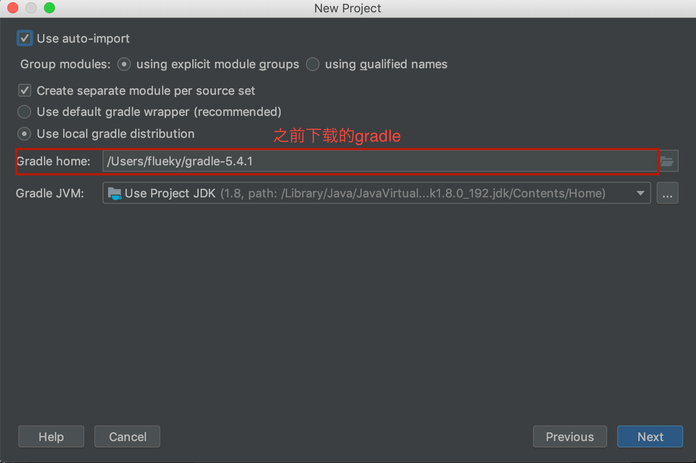指定工程目录。
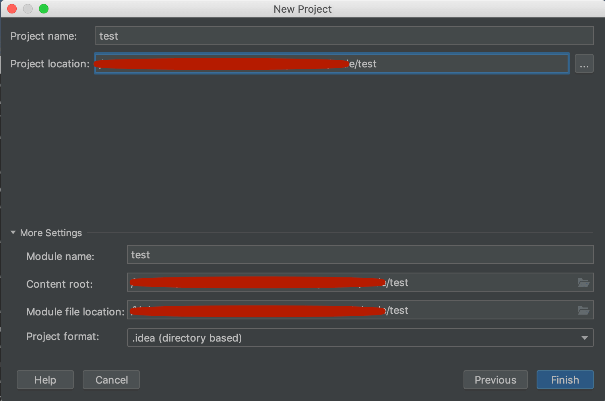最后的 gradle 项目结构。
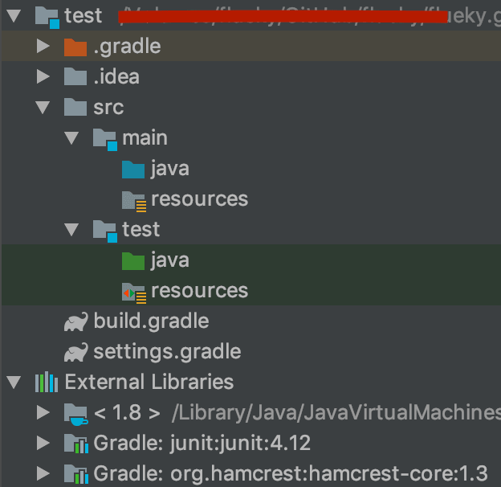咋一看是否同 Android 工程比较相似？
1.2 添加 gradle 支持
如果需要将现有的 idea 工程添加 gradle 支持，只需在工程中添加 settings.gradle 和 build.gradle 文件。
下面是一个普通的 Java 工程。
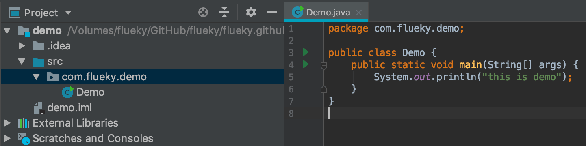添加上述两个文件后，并添加配置语句，重新打开 idea ，在右下角出现下图提示：
点击 Import Gradle Projet 出现下图配置页面，建议按照标记处指定 gradle 版本。
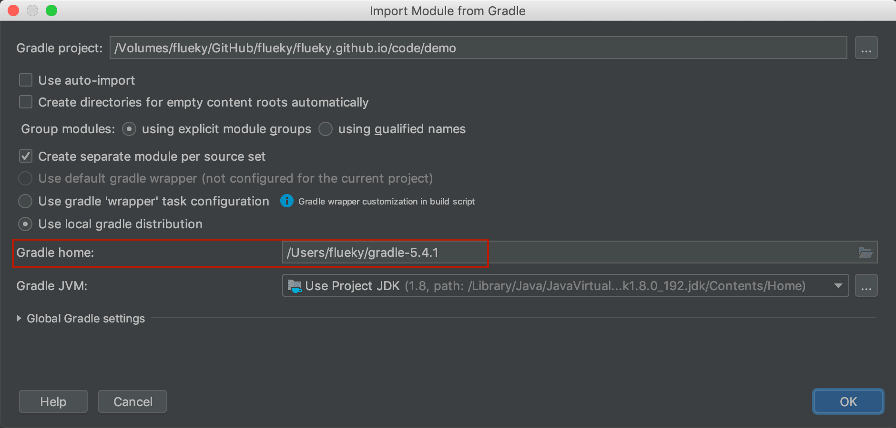settings.gradle 文件编辑内容：
1 | rootProject.name = 'demo' |
build.gradle 文件编辑内容：
1 | apply plugin: 'java' |
需要强调，普通的 java 工程结构同 gradle 工程结构存在差异。比如，前者源码目录层级是 src/package/class 。后者源码目录层级是 src/main/java/package/class 。
因此需要在 build.gradle 文件中配置下面的代码：
1 | sourceSets { |
配置完后，点击左边刷新键，重新构建工程。
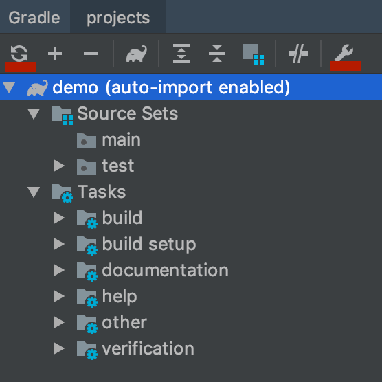或者点击右边设置键，勾选自动导入。
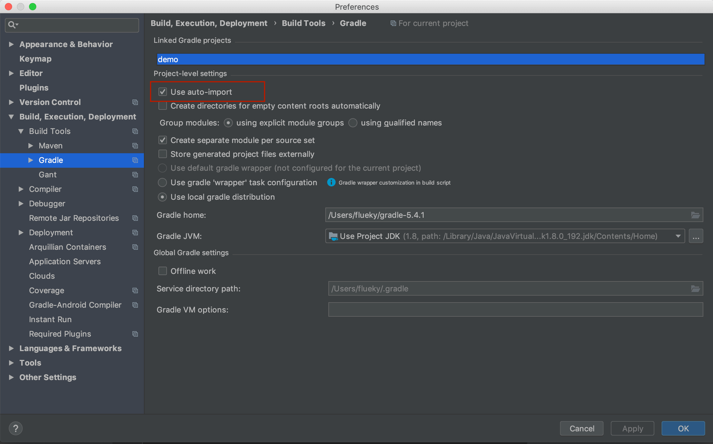注意此时工程目录的变化。
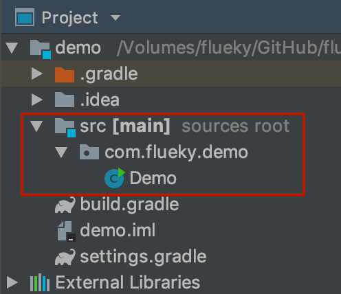2. eclipse
使用 ecilpse 需要单独安装 gradle 插件，部分版本不需要。
打开 Eclipse Marketplace 。
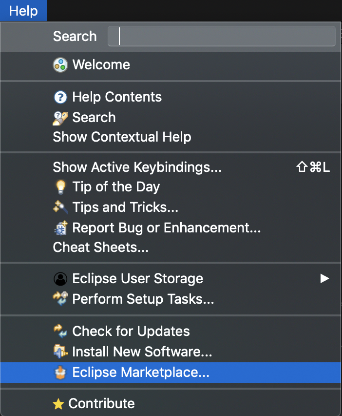搜索 gradle ，目前最新版本 3.0 。
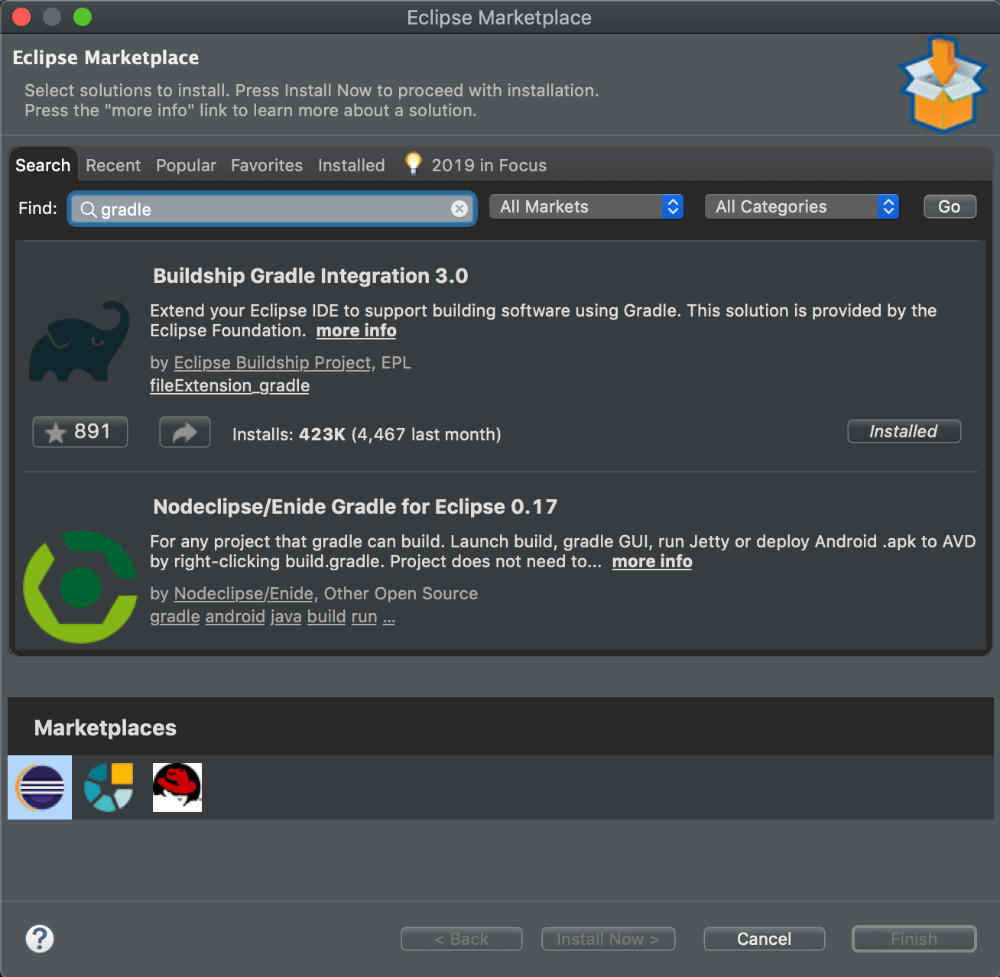安装后需要重启 eclipse 。
2.1 创建 gradle 工程
新建工程，选择 Gradle Project。
中间这个欢迎页可以勾选下次不显示。

指定工程名称和存储路径。
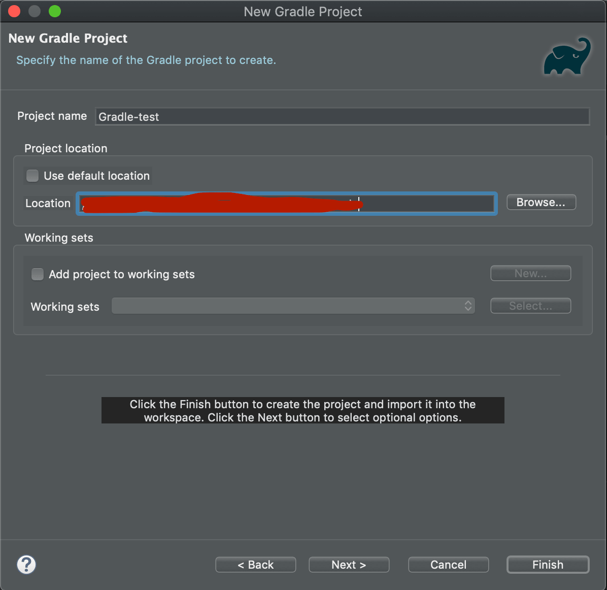确定 gradle 相关参数。
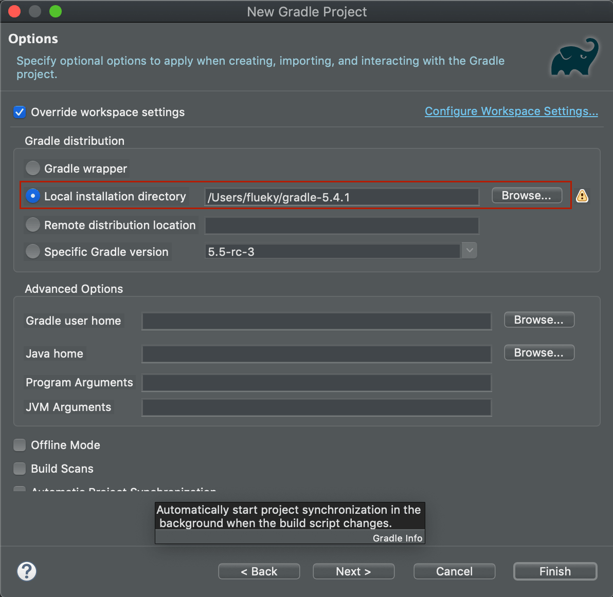确定工程参数无误。
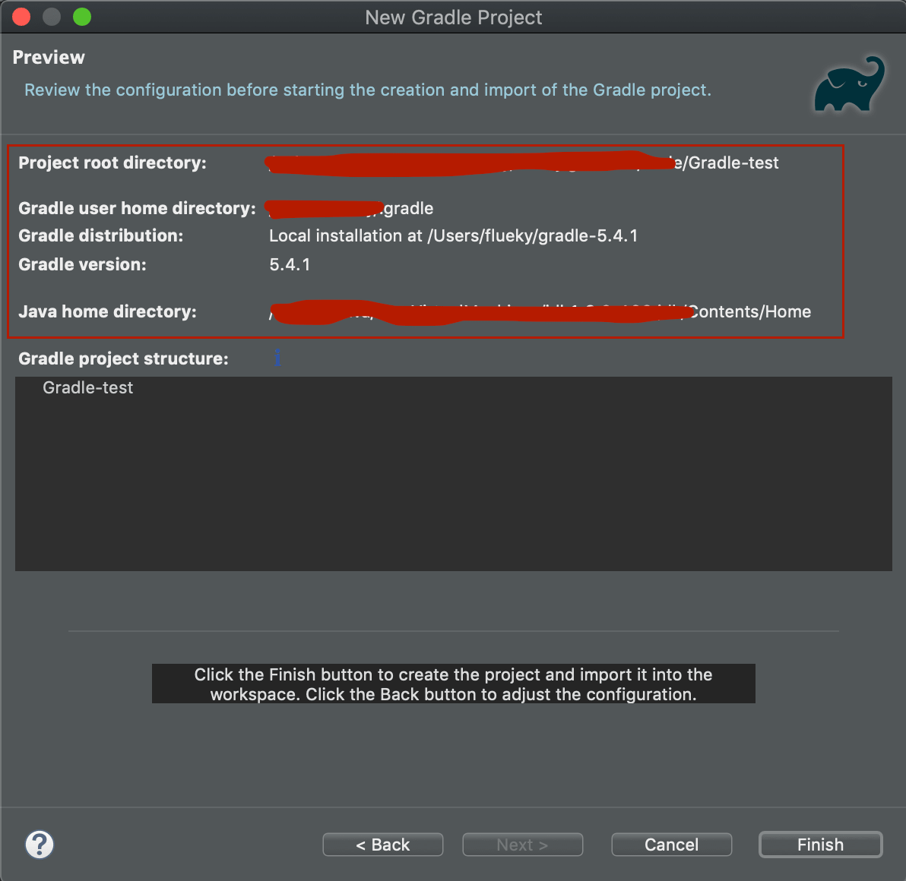最终的工程目录如下。
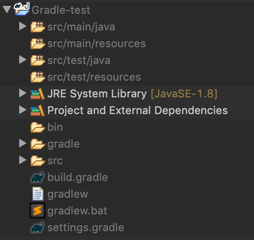2.2 添加 gradle 支持
经测试验证，对现有 eclipse 工程添加 gradle 支持，此方案不可行。如有人尝试成功过，请留言邮箱 flueky@sina.com 。
建议 eclipse 工程添加 gradle 支持后，使用 idea 打开。具体方式同 idea 工程 添加 gradle 一致。
3 多工程关联
eclipse 同 idea 对工程结构的概念上存在些许差别。
eclipse 打开一个工作空间，每个工作空间中可以包含多个项目。每个项目，既可以单独运行，也可以关联运行。
idea 打开一个项目，每个项目可以包含多个模块，模块之间的关联，等同于 eclipse 中的多项目关联。一个项目可以有多个主某块，等同于 eclipse 中的多个独立项目。
Gradle 项目中，有一个 settings.gradle 文件和 1 + N 个 build.gradle 文件。settings.gradle 声明工程和各个模块，工程和每个模块中都包含 build.gradle 文件，用于配置工程具体参数，如：依赖关系，编译脚本等。
3.1 idea 工程
基于之前的 demo ，创建 lib module 。
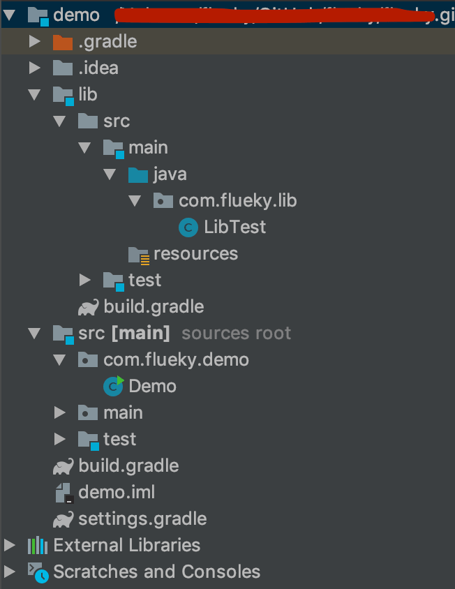settings.gradle 中，自动生成包含 lib 的配置。
1 | rootProject.name = 'demo' |
此时 build.gradle 文件有两个，一个在lib目录下用于配置 lib ，一个在工程目录下用于配置主 module 和工程。在工程目录的 build.gradle 中，添加对 lib 的关联。
1 | dependencies{ |
如果将主 module 中源码部分抽出单独放置一个文件夹中。
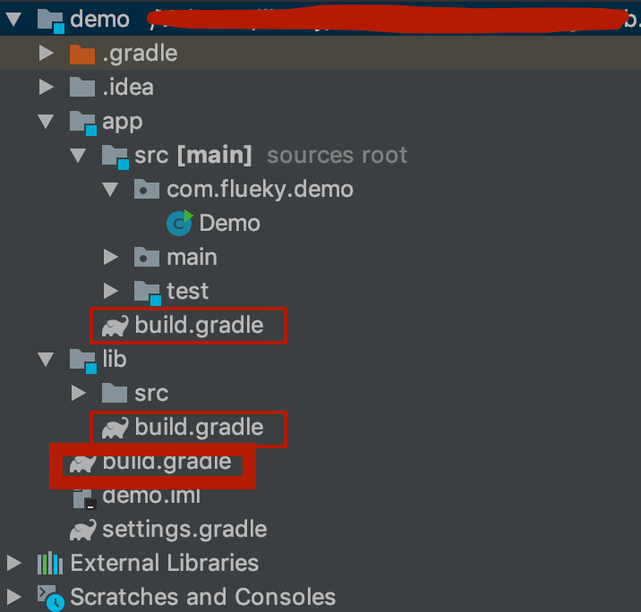此时，工程的 build.gradle 和 主 module 的 build.gradle 文件将分开。需要对 app 中的 build.gradle 文件添加对 lib 的依赖。
3.2 eclipse 工程
eclipse 中，每个工程是独立的，因此不能像 idea 中那样，添加被依赖的模块。但是，可以通过引用外部目录的方式，将其他的工程作为库工程依赖。
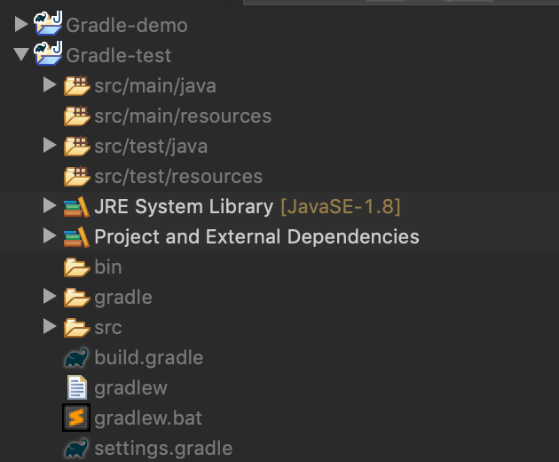图中，demo 和 test 都是一个独立的工程，因此都有 settings.gradle 文件和 build.gradle 文件。打算使 demo 依赖 test，需要在 demo 中的 settings.gradle 文件中添加下面的配置。
1 | include 'Gradle-test' |
并在 demo 中的 build.gradle 文件中添加依赖。
1 | dependencies { |
觉得有用？那打赏一个呗。[去打赏](/donate/)
 wechat
wechat alipay
alipay